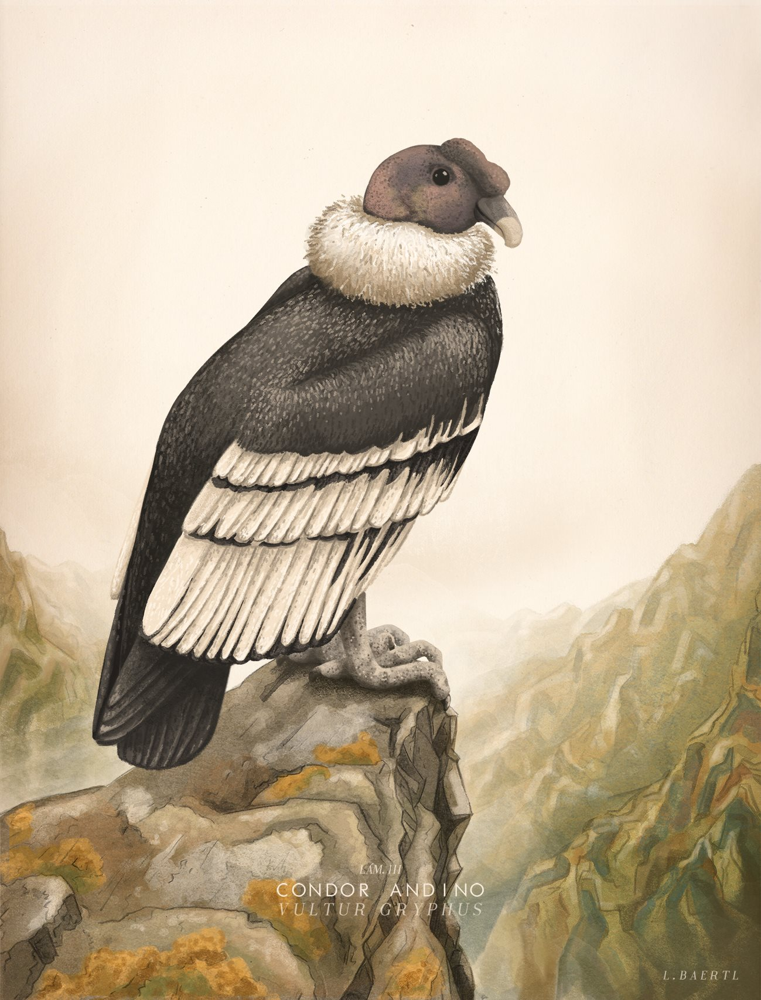

Cóndor Andino (Vultur gryphus)
Ubicación: Cordillera de los Andes, formaciones rocosas inaccesibles de gran altura ó en parques nacionales como: Chingaza.
Altura: ebcontrado por los 3000 hasta 5000 metros sobre el nivel del mar.
Estado de conservación: peligro crítico.